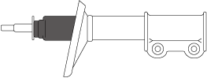
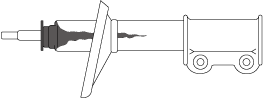
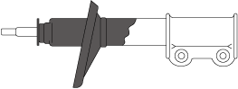

FRONT SHOCK ABSORBER INSPECTION
id021300800800
1. Remove the wheel and tire.
2. Inspect the front shock absorber for damage.
3. Push up the dust boot to the point where the piston rod is visible as shown in the figure.
am2zzw00016952
|
4. Inspect the front shock absorber for oil leakage and if there is any malfunction, replace the front shock absorber. (See FRONT SHOCK ABSORBER AND COIL SPRING REMOVAL/INSTALLATION.) (See FRONT SHOCK ABSORBER AND COIL SPRING DISASSEMBLY/ASSEMBLY.)
|
SYMPTOM |
DETAIL |
ACTION |
|---|---|---|
 |
OIL STAIN ON UPPER PART OF FRONT SHOCK ABSORBER
• Oil stain is above the spring seat as shown in the figure.
|
Wipe off any dust or oil on the surface.
|
 |
OIL LEAKAGE RUNS DOWN IN STRIP
• Oil is running down in a strip past the spring seat along the side of the front shock absorber as shown in the figure.
|
Replace the front shock absorber. (See FRONT SHOCK ABSORBER AND COIL SPRING REMOVAL/INSTALLATION.) (See FRONT SHOCK ABSORBER AND COIL SPRING DISASSEMBLY/ASSEMBLY.)
|
 |
OIL LEAKAGE FROM SPRING SEAT BOTTOM TO LOWER PART OF FRONT SHOCK ABSORBER
• Oil is running down in a band past the spring seat along the side of the front shock absorber as shown in the figure.
|
5. Remove the front shock absorber. (See FRONT SHOCK ABSORBER AND COIL SPRING REMOVAL/INSTALLATION.) (See FRONT SHOCK ABSORBER AND COIL SPRING DISASSEMBLY/ASSEMBLY.)
6. Expand and contract the front shock absorber piston rod 3 times or more at a certain speed and after the 4th time verify that the weight in a full stroke is constant with no abnormal response and noise.